Test Suites page
On the Test Suites page, you can add or delete special test suites and floating test suites. You can also edit the settings of every test suite on this page.
The Test Suites page makes it easy to do batch setups.
- You can copy the content of one cell and then paste it into several cells.
- You can copy the content of a range of cells to a text editor, edit the content in this text editor, and paste the modified content back into the Test Suites page.
Three types of test suites are shown on this page:
- "Run" and "Run and Branch" test suites
- Special test suites, which are displayed with a cyan background
- Floating test suite, which are displayed with a gray background
The Test Suites page displays test suite settings in the columns described below.
Test Setup columns
In these columns, you can define the test executed by this test suite. The Type column specifies which kind of test the test suite executes. It can only be M for test method.
Primary Settings columns
These columns include the timing, level, analog setup, and pattern settings.

Result columns
In these columns, you can check the execution information after running the test suite or the whole testflow. On the Result columns of the Test Suites page, the borders of the executed test suites change colors.
Wide green border |
Passed test suite. |
Wide red border |
Failed test suite. |
Narrow green border |
Test suite which has been set to pass. |
Narrow red border |
Test suite which has been set to fail. |
Narrow yellow border |
Test suite which has been set to bypass. |
If you change the testflow after current execution, the borders of all test suites become dashed lines.
For multisite testing, if the Test Suites page is set to show the results of all sites, the test suite borders of all sites are green only when all sites are pass. If one site fails, the test suites for all sites appear with red borders.
If the Test Suites page is set to show the result of the site in focus only, the test suite border changes color according to the result of the site in focus. Passed test suites appear with green borders and failed test suites appear with red borders without considering the results of the sites not in focus.
For multisite testing, if you activate Show All Sites in the Preferences window, the results for all sites are displayed.
The table below explains the meaning of each column.
Pass/Fail |
The result of the test. |
Exec Time (ms) |
The total execution time for each test suite. For multisite testing, the average testsuite execution time of all devices is displayed. |
Exec Num |
The execution times for each test suite. For non-optimized testflows, this number is the number of testsuite repetitions multiplied by the number of sites. For optimized testflows, this number is the number of testsuite repetitions as multiple sites are tested in parallel. |
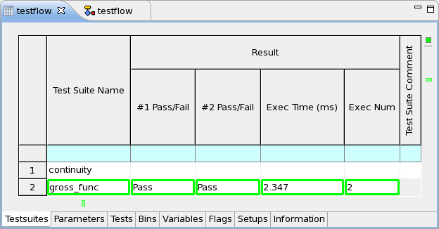
Test suite flags columns
These columns display the test suite flags which control the output of the test suite.
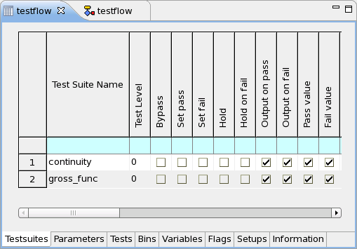
Test suite Comment column
You can add comments for each test suite.
Annotation bar
For the following six kinds of elements, annotations are displayed on the Test Suites page:
- Bookmarked test suite
- Executed test suite
- Failed
- Passed
- Failed test suite
- Invalid parameter
- Linked test suites
- Passed test suite
Clicking on the annotation locates the relevant element. Hovering the mouse over an annotation displays the relevant information in a tooltip.
You can change the way the annotation is displayed in the Table Annotations preference page.
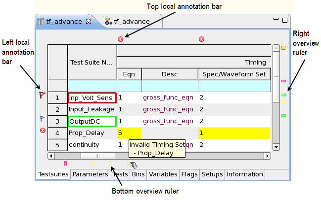
The annotations are organized in four annotation bars:
- Top local annotation bar
- Left local annotation bar
- Right overview ruler
- Bottom overview ruler
In the local annotation bars, the annotations are aligned with the visible columns and rows. The overview rulers provide overviews for all columns or rows of the table.
The annotations help you easily navigate the relevant test element. For example, to locate the last executed test suite, click the last annotation in the right overview ruler, if you have set the Table Annotations preference page to show the table annotations_ of Executed type in the Overview Rulers.
By clicking the Next Annotation button or Previous Annotation button on the main toolbar, you can navigate the test suites on the Test Suites page. If you want to specify the search scope, click the arrow next to the button and select the types of test suites you are interested in from the pop-up list.
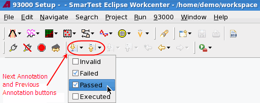
Show and Hide buttons
When you activate the Test Suites page on the Flow Data Editor, the following buttons appear on the main icon bar of the SmarTest Work Center.
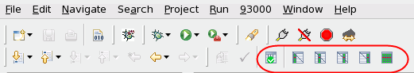
These buttons control only the visible columns. You can choose which columns are visible in the Test Suites preference page.
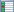 / |
Show or hide the test setup columns |
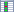 / |
Show or hide the primary setup columns |
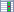 / |
Show or hide the result columns |
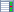 / |
Show or hide the test suite flag columns |
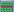 |
Show all columns |
Validate setups Clicking this button highlights any invalid testflow setup (where setup files have not been loaded or the selected setting does not exist in the setup files) the equation or set number in yellow and displays the annotation. You can hover over the annotation to see the detailed information. |
Check for inconsistency of test suite(s)
When you open any page of the Flow Data Editor, the following buttons appear on the main icon bar on the left of the Show and Hide buttons (see above).
Check Inconsistency
Check All Inconsistencies
SmarTest automatically checks the consistency of the test suites with the current testflow.
If a test suite is inconsistent, SmarTest:
- Shows the test setup entries on the test suite page with a yellow background (SmarTest default configuration)
- Grays out the test suite's properties on the property view
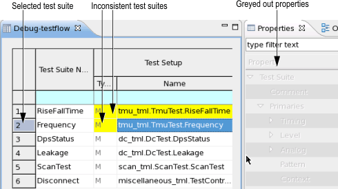
Using the buttons, you can adapt a single inconsistent or multiple inconsistent test suites to your testflow.
- Adapt a single test suite:
- Select the test suite.
- Click .
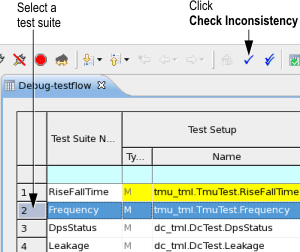
SmarTest adapts the test suite.
- The background color changes to the default color (white)
- On the properties view, you can edit the properties
- Adapt one or more test suites:
- Click .
The selection window opens showing all inconsistent test methods that can be adapted.
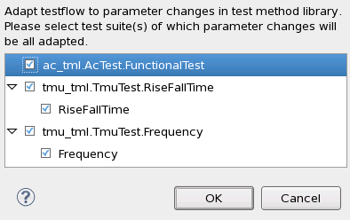
By default all inconsistent test suites are preselected.
- Clear the test suites you do not want to adapt.
- Click OK.
SmarTest adapts the test suites.
- The background color changes to the default color (white).
- On the properties view, you can edit the properties.
- Click .
Functional changes
- Introduced before SmarTest 6.3.2
- SmarTest 6.5.2: Test suite names can be changed.
- SmarTest 6.5.2: Test suite Comment column is added.
- SmarTest 6.5.2: Show all columns button is added.
- SmarTest 6.5.4: Adapt test suite(s) buttons added
- SmarTest 7.0.1: Cloned test suite renamed to linked test suite